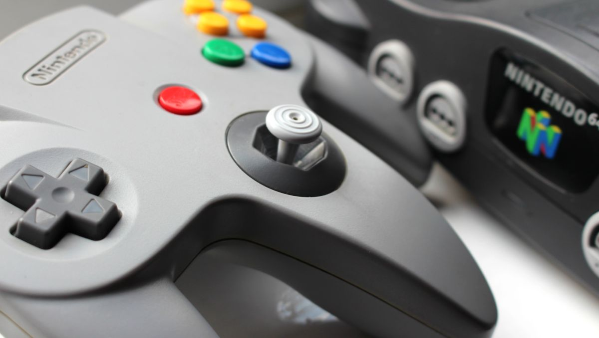
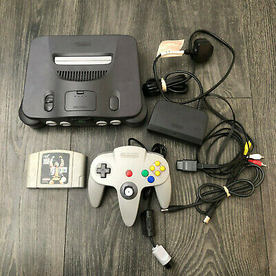
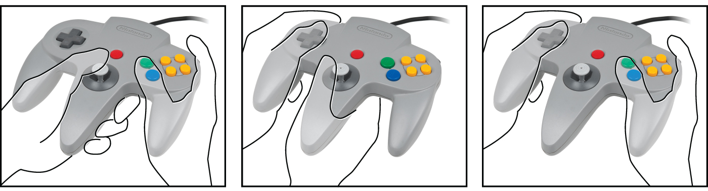

The Nintendo 64 (N64) is a time capsule for the video game consoles of yesteryear. Consoles of
the more modern variety such as the PlayStation 3 or 4 and Xbox 360 or Xbox One, have been
branded more as entertainment systems.
The N64 was more of a plug in and play affair, simply offering consumers the ability to play
some unique, innovated, and fun experiences, while offering some incredible power for its
time. Whether your goal is to relieve some nostalgic moments, play through some games in
their most authentic way, or introduce new or younger audiences to the world of gaming, the
N64 is the perfect choice.
Since the N64 has been discontinued, the N64 console you have purchased may be missing
some components that came included in a new package.
Necessary Components
- N64 Control Deck
- N64 Controller
- N64 Jumper Pack
- AC Power Supply
- Stereo Audio/Video Cable

Additional Components
- N64 Expansion Pak
- Aerial Extension Cable
- RF Modulator
- Aerial Switch Box
- Instruction Booklet
- Consumer Information and Precautions Booklet
To start the connection process for your N64, make sure you have the following:
- N64 Control Deck
- N64 Controller
- AC Power Supply
- Stereo Audio/Video Cable
- A Working Television
- A Compatible N64 Game Pak
For users with televisions that have standard A/V inputs:
Make sure the Nintendo 64 Power Switch is off before beginning the connection process.
- Insert the AC power supply to the back of the N64 control deck until you hear a click
sound.
- Connect the AC power cord into a standard wall outlet.
- Insert the A/V cable to the back of the N64 control deck.
- Connect the colored AV cables into the corresponding colored audio/visual inputs on
your television.
- Insert the HDMI cable to the HDMI port on your AV to HDMI converter.
- Connect the HDMI cable to the HDMI port on your television.
- If you have an N64 jumper pak or N64 expansion pak, insert it into the memory
expansion slot below the Game Pak slot on the top of the console.
- If the N64 jumper or expansion paks have already been inserted, proceed to the
following step.
- Insert an N64 Game Pak into the Game Pak slot until you hear a click sound.
- Connect an N64 controller into the first controller input of the N64 control deck.
- Flip the power switch on.
- Follow the on-screen instructions.
- These may vary depending on the game you are currently playing.
Powering Off
- Flip the power switch off.
- Remove the Game Pak from the control deck.
The N64 controller looks and plays differently than most modern controllers, below is a general
description of the buttons on the controller. Their use may vary depending on the game
inserted into the console at the time.
Buttons
- A: Main button
- B: Secondary button
- C Buttons: Camera and/or second option buttons
- L: Left shoulder button
- R: Right shoulder button
- Z: Trigger button
- D-pad: Control pad
- Start: Pause or menu button
- Analogue Stick: Control
Due to the design of the N64 controller, it can be held in 3 different ways. These may vary
depending on play style and between games.

No Display
- Make sure the Power Switch has been flipped on.
- Make sure the A/V cables and/or HDMI converter have been properly connected.
- Make sure the Game Pak has been properly inserted.
- Make sure the Game Pak you are using matches the region for the console you are
using.
No Power
- Make sure the AC power supply has been properly connected to the control deck.
- Make sure the power cord has been inserted into a working wall outlet.
- If there is no power after checking the above steps, disconnect the AC power supply and
wait 2 minutes for it to reset. After 2 minutes, proceed to reconnect and try again.
- If there is still no power after the above step, this may indicate a problem with power
supply or N64 Game Pak.
No Sound
- Make sure the volume on your TV is turned on or up.
- Make sure the Audio cables for the N64 have been plugged into the audio inputs.
- Check the in-game audio menu to ensure volume is turned up or on.
Irresponsive Controller
- Make sure the controller is properly inserted into the controller input of the control
deck.
- Turn off the N64 and reconnect the N64 controller.
- Push the reset button on the N64 to see if the controller becomes responsive.
Sticky Control Buttons
Clean the controller buttons using the following procedure:
- Disconnect the controller from the control deck.
- Get a clean toothbrush and a cup of warm tap water.
Do not pour or submerge the controller in any type of liquid.
- Slightly dip the toothbrush in the water and scrub the area of the controller around the
buttons and control stick.
- Work the bristles down around the sides of the buttons and the control stick.
- After cleaning the controller, dry it off with a paper towel.
- Let the controller air dry for at least a couple of hours.
- Test the controller for proper response.
If the controller still does not work, it may need to be replaced. Try using another controller.